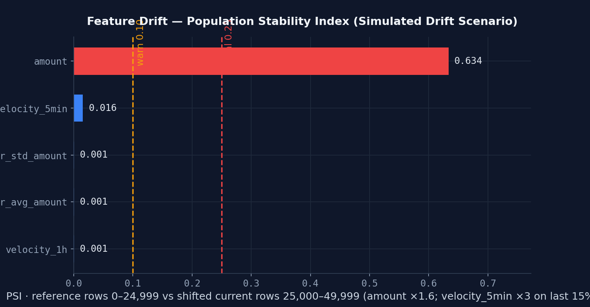

Monitoring and Drift
Models decay in silence — so the system listens.
A deployed model doesn't announce when it stops working. User behavior shifts, fraud
tactics evolve, and accuracy bleeds out month by month. The detector is a hand-rolled
Population Stability Index: it compares each current feature distribution against a stored
reference window and flags any feature whose PSI exceeds 0.25. If
tx_count_last_5min suddenly looks nothing like the reference, predictions
become unreliable even before labels say so.
PSI is the textbook measure here, and it is deliberately implemented directly rather than
pulled in as a dependency — DataDriftService._compute_psi is about fifteen
lines of numpy, and owning it means the binning, the epsilon guarding log(0)
and the threshold are all readable in one place. The figure below is not that function,
though: it comes from a second, self-contained PSI in the chart generator, which cuts its
bins from the reference window's deciles alone. The monitor pools the reference and
the current window together and cuts from the combined deciles instead. Those two sets of
edges land in different places as soon as the distribution moves, so the bars below are the
chart's own arithmetic — they show the shape of a shift, not a reading the monitor would
return.
Two details make the monitor refuse to report confident nonsense. It records the SHA-256 prefix of the model artifact that produced the reference — because a reference is only valid for the artifact it came from, and comparing today's distribution against last quarter's model is not a drift signal, it is two variables changing at once. And it holds a 200-row floor on the one path where it invents its own baseline: auto-seeding a reference from live traffic below that size returns an empty report instead of a number, because 200 rows is only 20 per bin. That floor guards the seeding path, not evaluation. An admin who uploads a reference through the reference-data endpoint installs a baseline of whatever size they send, and the next evaluation is measured against it without a row-count check.

data/synthetic_transactions.csv — reference
rows 0–24,999 untouched versus current rows 25,000–49,999 carrying a fully
documented shift applied on top (amount ×1.6 across the whole current
window; velocity_5min ×3 on its last 15%, the CSV column behind the
production feature tx_count_last_5min). Result: amount at
0.139 is the only feature to cross a threshold at all, and it lands in
the warn band rather than past critical — every other feature stays at or below 0.029. That
selectivity is the point: the feature that was shifted is the one that moves, and the
three that were not do not. The 0.10 / 0.25 lines are the conventional industry readings
of PSI (warn / critical), not project-specific alarms.
Artifact: case-study/assets/feature-drift.png, generated by
scripts/generate_case_study_charts.py.Detection is paired with action. Retraining triggers fire automatically when either:
drift_score > 30 // distribution alarm
This converts model maintenance from "someone notices someday" into an observable, testable condition — the difference between an ML demo and ML in production.